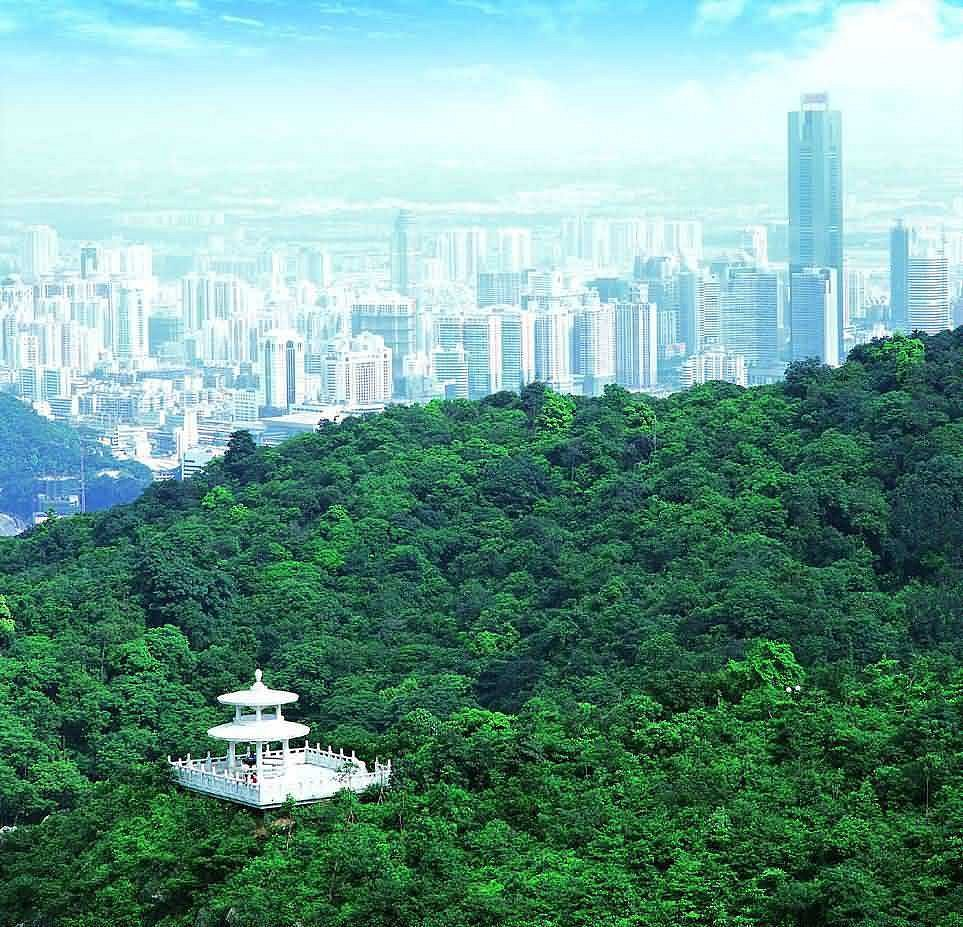

概要・歴史
白雲山は広州の著名な山で、同地のランドマークの一つにもなっています。30以上の峰を擁しており、主峰である摩星岭の頂上からは、広州を一望することができます。 白雲山は普段は雲に囲まれており、ハイキングをして花を楽しむのに良い場所です。7つの主な地域に分かれており、全体としては非常に広いエリアが白云山に含まれます。 花を楽しみに行くなら、云台花園（YuntaiGarden）が良いでしょう。広州ではめずらしい西洋風の庭園で、花々が一年中咲き誇っています。Learning more
予約・基本情報
| 住所: | 広東省広州市白雲区白雲大道南 |
| アクセス: | 広州市営バス路線36、76で「白雲山西門」バス停下車すぐ |
| 駐車場: |
|
| 営業時間: | 6時〜22時 |
| 所要時間目安: | 自分次第 |
| 入場料: |
|
| 入場時の注意事項: | 特になし、山登りの準備をしっかりしましょう |
| 事前予約: | 不要 |